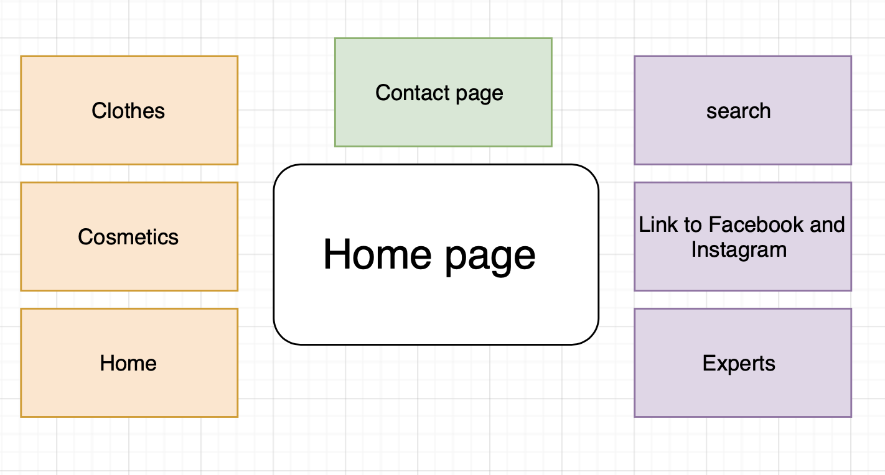
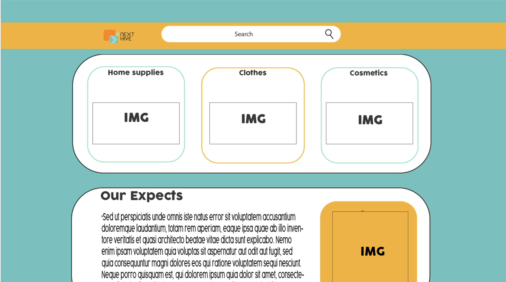
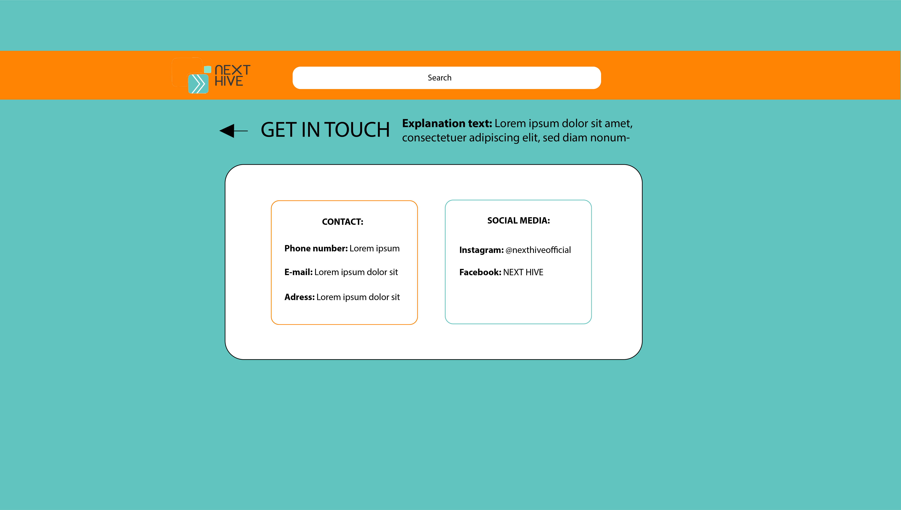
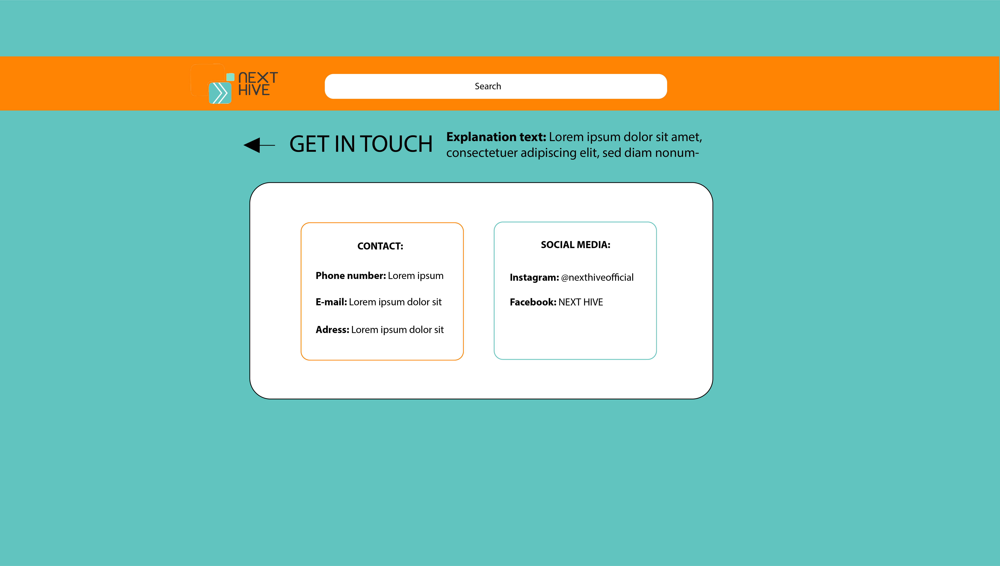
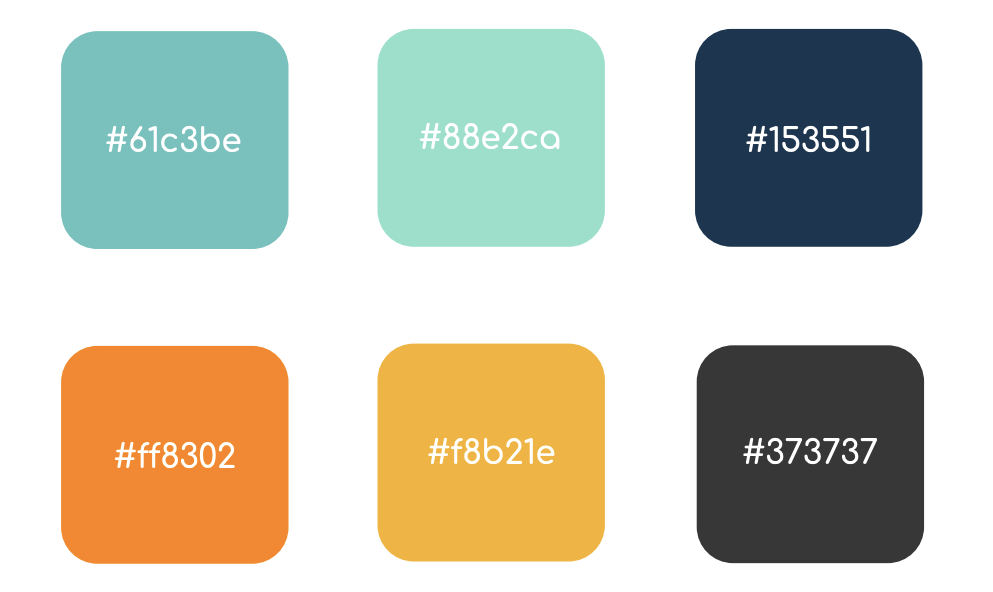

Justification
First flow chart:
First, we had a meeting what we wanted to have in our website, we came fast to the conclusion that a contact page, search bar, link to our social media platforms, experts, clothes, cosmetics and a home button were important to have.

Wireframe

 

After brainstorming about what needs to be in our website, we decided to make a wireframe. We did this by making use of Illustrator.
Design elements
Colors:
For our website, we used 6 different colors. These colors had already been established in the Brand Road Map. We chose green, because it is a color that immediately reminds you of nature and the environment, which fits with the ideas and values of the brand. Then we chose the color orange because it radiates energy and warmth. In addition, green and orange complementary colors. At last, a darker blue and black were chosen because it shows power and elegance.

Fonts:
For the Brand Road Map, the font Arista 2.0 Alternate Light was used. However, after having a discussion all together we figured a different font would suit better, since the original font was a bit difficult to read sometimes. Therefore, we decided to pick another font that looked similar to the original, but less complicated to make it easier to read when visiting the website. The first font we chose for the final website is Comfortaa, which is used for the body text. We want our brand to be appealing to everybody, therefore we decided to pick a font that wasn’t too round, but also not too straight. Because of this, the font isn’t feminine nor masculine which then can appeal to our whole target audience. The second font we chose was Averia Serif Libre. This font will be used for the headers. It has the same characteristics as Comfortaa; the font is not feminine nor masculine. However, the font is a bit thicker which makes it stand out more, which is suitable for the headers.
User testing:
In order to test our prototype, we did 20 interviews to get feedback on our website. During these interviews we made use of our digital prototype, in order to receive a live reaction from our participants. Participants were shown the prototype and then ask to share their thoughts about it. Then they were asked what they thought was good on the website and what could be improved. We received the following feedback:
Pros:
The colors of the website looked good.
The website has a clean cut.
It looks accessible and easy to understand for everyone.
It looks accessible and easy to understand for everyone.
The font looks good.
After testing the website with a colorblindness filter, we found out that everything is still readable.
- The colors of the website looked good.
- The website has a clean cut.
- It looks accessible and easy to understand for everyone.
- It looks accessible and easy to understand for everyone.
- The font looks good.
- After testing the website with a colorblindness filter, we found out that everything is still readable.
Cons:
The text was a bit small.
The second page, where you can compare the products, is a bit messy because of all the images, which makes it unclear.
The pages ‘home’ and ‘homepage’ are confusing since they seem similar.
More imagery to make it more appealing.
It is unclear that the subscriptions cost money.
It is not mentioned in the expert page that the experts are only accessible through a subscription.
- The text was a bit small.
- The second page, where you can compare the products, is a bit messy because of all the images, which makes it unclear.
- The pages ‘home’ and ‘homepage’ are confusing since they seem similar.
- More imagery to make it more appealing.
- It is unclear that the subscriptions cost money.
- It is not mentioned in the expert page that the experts are only accessible through a subscription.